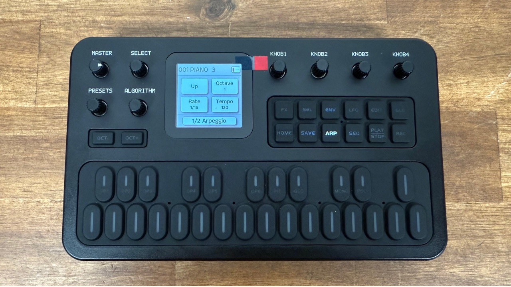
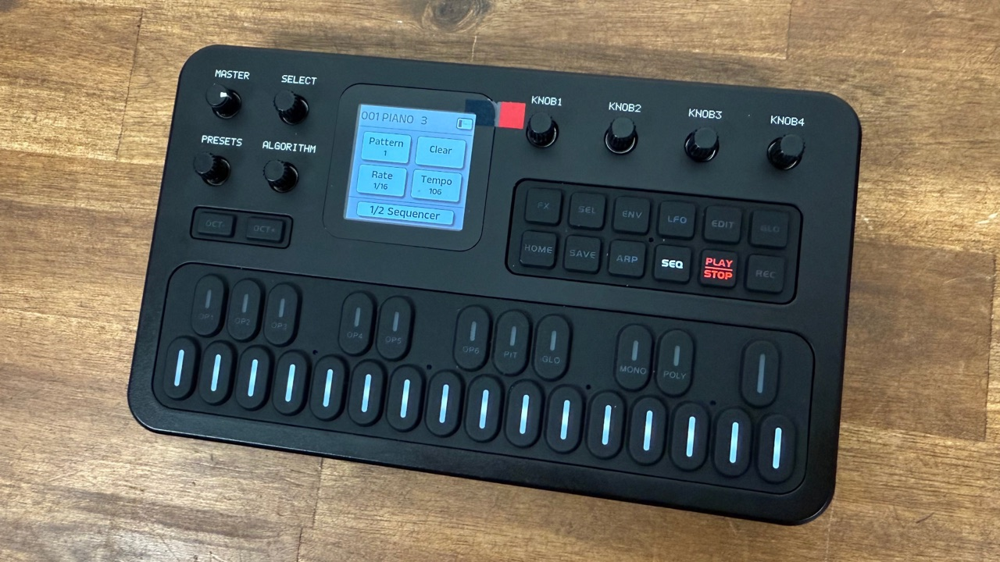

8. Arpeggiator and sequencer
ARP, SEQ, recording, patterns, chain
Arpeggiator

An arpeggiator plays the notes you hold one after another, automatically, in a pattern. Hold a chord; hear a pattern.
Press ARP. The ARP LED lights and page 1 appears.
Hold one or more keys. The arpeggiator plays them. The key LEDs light as each note sounds.
Set the page 1 values:
- K1 Mode: the order of notes (table below).
- K2 Octave 1–4. How many octaves the pattern spans before repeating.
- K3 Rate: note length of each step (1/16 = sixteenth notes).
- K4 Tempo 30–300 BPM.
Turn SELECT for page 2:
- K1 Gate 20–100%. How long each note is held within its step. Low = short, staccato; 100% = connected.
- K2 Swing 50–75%. 50% is straight; higher pushes every second step late for a shuffle.
- K3 Latch On/Off. On = notes keep playing after you let go; new keys replace the set. Off = the arp stops when you release.
- K4 Sync On/Off. On = follow the tempo of an external MIDI clock instead of Tempo.
Press ARP again to switch the arpeggiator off. It returns to Home.
Modes
| Mode | Order |
|---|---|
| Up | Lowest to highest, then repeat |
| Down | Highest to lowest, then repeat |
| Inclusive | Up then down, repeating the top and bottom notes |
| Exclusive | Up then down, not repeating the top and bottom notes |
| Random | Random order |
| Order | The order in which you pressed the keys |
| Repeat | Each note is repeated before moving to the next |
If the sequencer is on, pressing ARP shows Disable SEQ to enter. Turn SEQ off first (press SEQ).
The manual does not list the Rate options. V13 added 1/1 and 1/2. Common sense and the unit’s behaviour suggest values from whole notes down to 1/32 with triplets (1/4T, 1/8T…), but the exact list is not published.
The manual does not say how the Octave setting combines with each Mode (e.g. whether Down starts from the top octave). Listen on your unit.
Sequencer: overview

The sequencer records a loop of up to 16 steps; each step can hold one note or a chord. There are 16 patterns to store loops in, and all are kept when the power is off.
Press SEQ. The SEQ LED and an orange STOP LED light, and the page appears.
The 16 white keys now show the steps. Solid = the step has a note. Off = empty. Blinking = the step being played right now.
| LED | Meaning |
|---|---|
| Solid | Step has notes |
| Off | Empty step |
| Flashing | Currently playing this step |
Recording steps (step entry)
Press SEQ. Turn SELECT to choose page 1 and set K1 Pattern (1–16). If it already has notes and you want a fresh start, turn K2 Clear.
Press REC. The red REC LED lights.
Play a note or chord. It is placed in the next step and that step’s key LED lights. Play the next, and the next…
Press REC again to stop recording (this switches to playback mode; the STOP LED stays lit).
Recording is “step” style: the timing comes from the step position, not from when you pressed. You can take as long as you like for each note.
Long notes, rests and replacing notes
- Long note: while recording, on the current step hold the note and turn SELECT to the step where it should end, then release. The note is held over those steps and does not erase notes that were already there.
- Rest / move around: while recording, press and hold REC and turn SELECT to move the step position without recording. Move to an empty step and leave it empty for a rest.
- Replace: move to the step (as above), then hold the new keys on that step to add or replace notes.
- Per-step rate: on SEQ page 2, K2 Rate can be changed while recording. It then applies to that step only.
- Whether replacing a step first clears the old notes or adds to them.
- How a long note appears in the step LEDs.
- Whether the ±step cursor is shown on the screen.
Try it on your unit, since the manual only gives the gestures above.
Playback
Press PLAY/STOP. The PLAY LED lights green and the pattern loops. The step LED of the current step blinks.
Press PLAY/STOP again to stop; the STOP LED lights orange.
Press SEQ to leave sequencer mode (the LEDs go off and you return to Home).
If SEQ is not on, PLAY/STOP and REC show Enable SEQ first.
The three sequencer pages
Page 1: pattern
- K1 Pattern 1–16 · K2 Clear (turn to clear the pattern) · K3 Chain 1–16 · K4 Step 1–16 (pattern length)
Page 2: sound and timing
- K1 Voice 1–128 · K2 Rate · K3 Tempo 30–300 BPM · K4 Gate 20–100%
Page 3: feel
- K1 Swing 50–75% · K2 Sync On/Off (external MIDI clock) · K3 Transpose −24…+24 semitones, for the whole pattern
Tempo is shared with the arpeggiator.
A voice for each pattern
On page 2, Voice ties the pattern to one of the 128 voices. When you select the pattern, that voice loads. This is why the PRESETS knob is disabled while SEQ is on: the pattern, not PRESETS, picks the sound. Patterns and their voices are stored automatically.
Chain and Step length
- Step (page 1, K4) sets the loop length from 1 to 16 steps. A pattern of 12 steps loops after step 12 (good for odd lengths).
- Chain (page 1, K3), 1–16, plays several patterns one after another, starting with the current one. Chain 3 on pattern 5 should play patterns 5, 6 and 7.
The release notes say the chain starts “from the current pattern” and plays “several patterns continuously”. Whether it loops back to the first one, and how the chain interacts with different Voices per pattern, is not documented. The wrap-around described here is an assumption; verify on your unit.
What the V15 sequencer does not do
It has no per-step probability, ratchets, parameter locks or motion recording. These arrived only in the later V16 firmware, which this guide does not cover. Sync with an external MIDI clock uses clock messages: start, stop and clock.